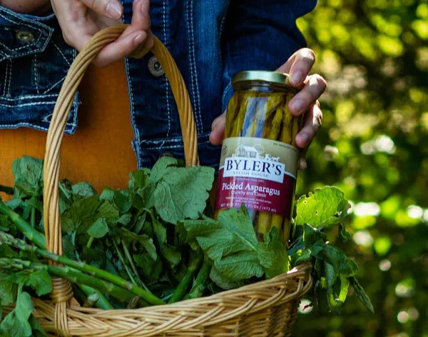
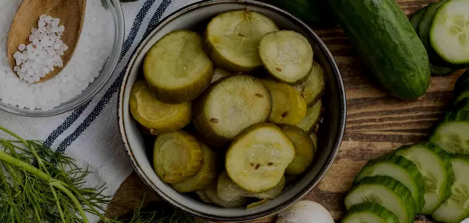

Freshology
noun
The belief that the only ingredients worth putting in your body come straight from the farm, with no additives, preservatives or high sodium.
See also: pure, natural, goodness.
Home / Freshology
noun
The belief that the only ingredients worth putting in your body come straight from the farm, with no additives, preservatives or high sodium.
See also: pure, natural, goodness.
The Byler family has been making homemade relish, jam and other condiments since 2001. From the beginning they have used a small-batch, open kettle process with heirloom family recipes, in Saegertown, Pennsylvania.
Just “good” isn’t good enough. The aim is a jar full of goodness and flavor, just like grandma used to make.
It started as Byler’s Relish House. The name is now Byler Canning Co., because the kettle turns out more than relish: jams, jellies, pickles and more.

Low sodiumNo MSGNo added preservativesKeeps up to 3 years unopened
Nothing frozen or pre-canned. Most of the ingredients come straight from the fields of local growers. Any fresher and they’d still be on the vine.
The team cleans the stems, cuts out any bad spots and washes every ingredient by hand. Every single piece, every single time.
Big batches mean longer cook times, which dulls flavor. Small-batch processing is the key to locking in intense flavor.

Grocery shelves are full of products with artificial ingredients and enough sodium to make a salt brick. When ingredients are over-processed, their flavor dulls, and that is when preservatives and artificial flavorings get added to make up for it.
With quality ingredients there is no need for fillers or artificial flavoring. Byler uses real, freshly picked ingredients in every condiment. Once you try fresh, you won’t go back.